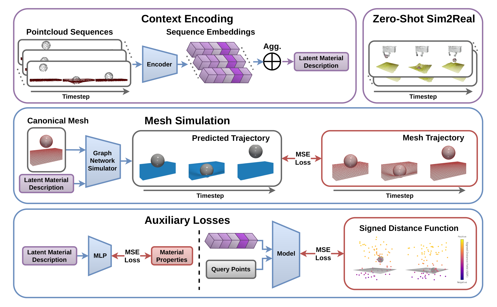
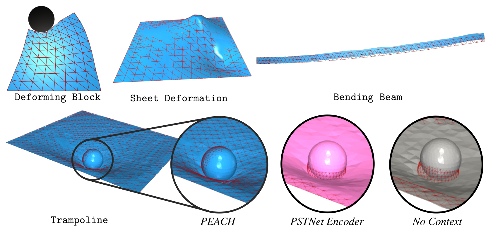
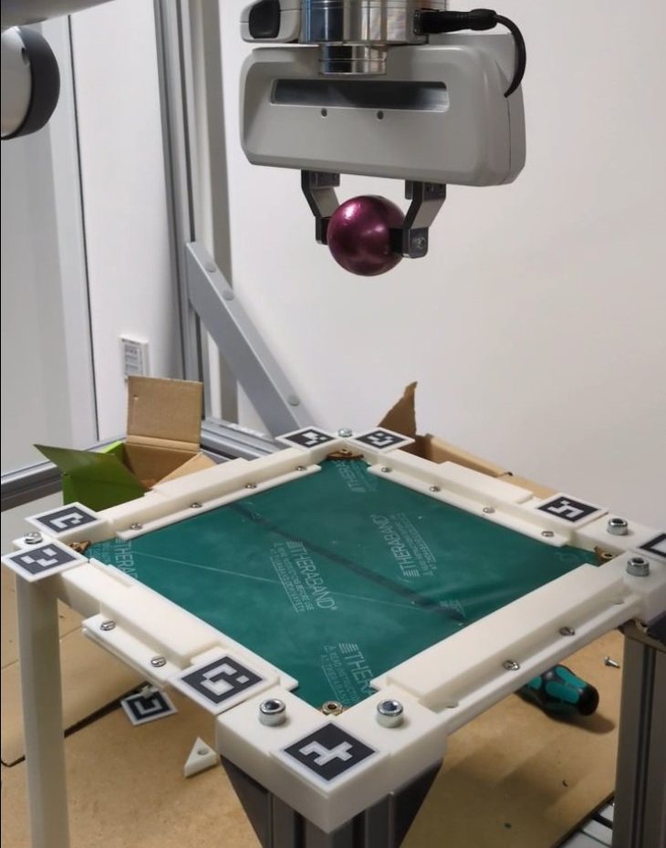
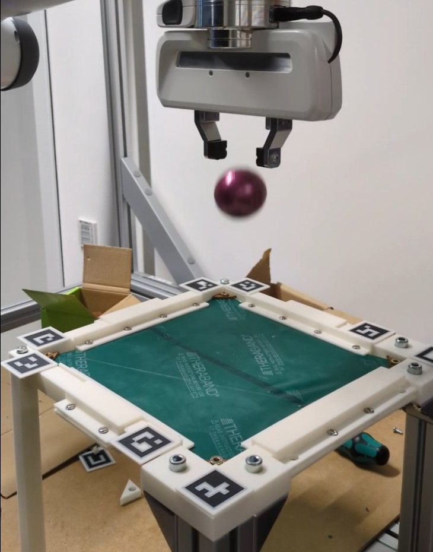
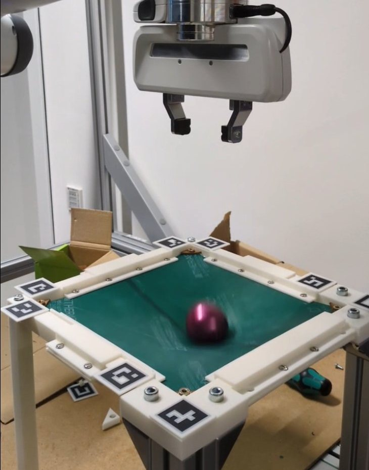
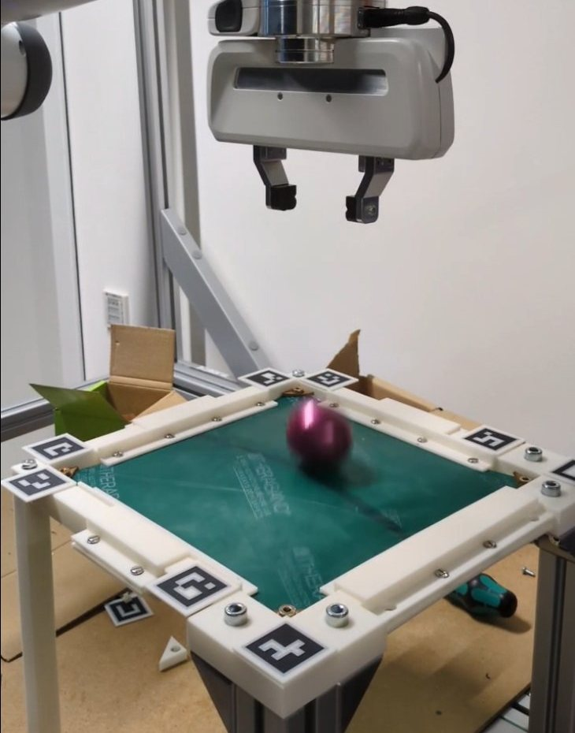
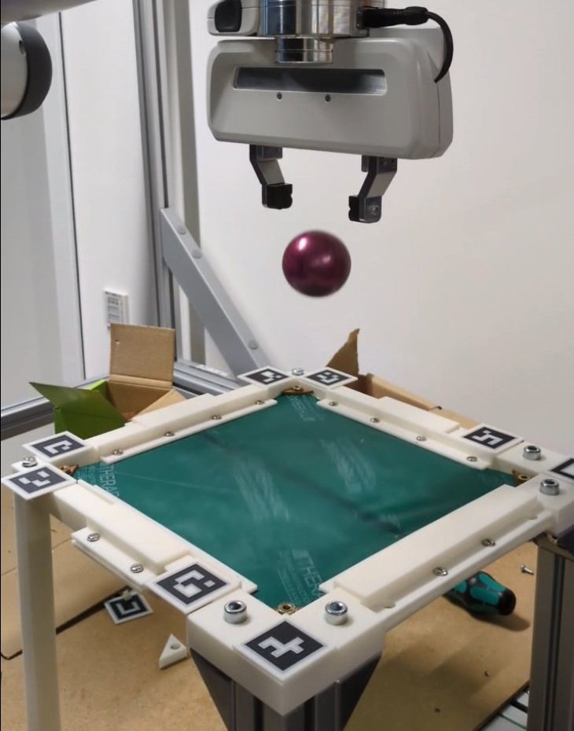
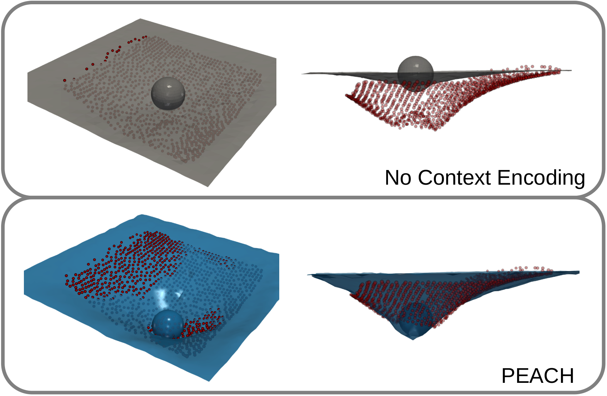
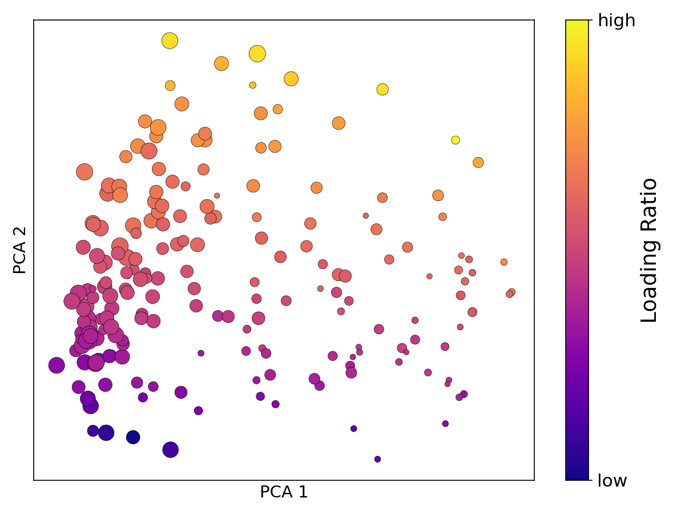

TL;DR
A learned physics simulator usually needs to know the material it simulates. PEACH infers it instead from a few point cloud recordings of the process, as they come out of a depth camera. It needs no meshes, no parameter labels at test time and no optimization loop, and it transfers zero-shot from simulation to a real robot scene.
0.58 s vs. 82 s to adapt and simulate
and still the lowest error on real data
which uses privileged mesh context
plus one initial mesh at inference

Abstract
Graph Network Simulators (GNSs) have emerged as powerful surrogates for complex physics-based simulation, offering inherent differentiability and orders-of-magnitude speedups over traditional solvers. However, GNSs typically assume access to the underlying material parameters, such as stiffness or viscosity, severely limiting their utility in realistic experimental settings. While recent meta-learning approaches address the parameter dependency by inferring properties from mesh trajectories, reconstructing a mesh from an observed scene is challenging. In this work, we introduce Point Cloud Encoding for Accurate Context Handling (PEACH), a novel framework that applies in-context learning on point clouds to adapt a learned simulator to unseen physical properties during inference. Our approach relies on a novel spatio-temporal point cloud sequence encoder, as well as two forms of auxiliary supervision to help improve simulation fidelity. We demonstrate that PEACH is capable of accurate zero-shot sim-to-real transfer on a challenging, dynamic scene. Experiments on simulation scenes show that PEACH even outperforms mesh-based baselines on prediction accuracy, while being much more practical for real-world deployment.
How PEACH works
Every task is one fixed set of physical properties, such as stiffness, damping or thickness. PEACH turns a handful of point cloud recordings of that task into a latent material description, which then conditions a mesh simulator.
-
1
Observe
Record 1–8 point cloud sequences of the process, e.g. with a depth camera. Points carry no correspondences across time, so the motion of individual points is never observed directly.
-
2
Encode in 4D space-time
Each sequence becomes one point cloud in 4D space-time. Farthest point sampling and kNN form space-time patches, which a PointMAE tokenizer on Fourier features embeds. A single transformer layer and attention pooling produce one latent code per sequence.
-
3
Aggregate
A learned element-wise softmax aggregation merges any number of sequence codes into a single latent material description r. More context gives a better estimate.
-
4
Simulate
The trajectory-level MaNGO simulator takes r and an initial mesh (e.g. from CAD) and predicts the entire trajectory in one forward pass. It interleaves message passing in space with 1D convolutions over time.
Why 4D space-time patches?
Material properties show in the dynamics of a scene, not in a single frame. PEACH normalizes time, scales it by a factor τ and then treats the sequence as one point cloud. Patches are then local in space and time, so the encoder can pick up motion without knowing which point is which.
Drag the slider. Each row is one frame of a deforming 1D profile, and points are colored by the space-time patch they fall into.
Aux. loss 1 Material regression
A small MLP predicts the ground truth physical parameters ρ from the latent description r. This grounds the latent space in physically meaningful quantities and doubles as an explicit system identification.
Aux. loss 2 Signed distance field
Query points in space-time read the nearest patch tokens and predict a tanh-squashed signed distance to the mesh surface. This keeps fine geometric detail in the tokenizer. SDF labels come from geometry alone, so this loss also works when physical properties are unknown.
For sim-to-real transfer, the simulated training point clouds are augmented with multi-scale noise, structured region dropout and sporadic outlier points. No real-world data is used for training.
Simulation results
We evaluate on four simulation scenes, covering 2D and 3D deformables and elastic to viscoelastic materials. Test tasks have physical properties and initial conditions that are not seen during training.

Compare methods side by side
All videos run in sync. The red wireframe is the ground truth mesh.
Simulation accuracy
Full rollout MSE with 8 context trajectories (log scale, lower is better), mean over 4 seeds.
Best point cloud encoder, by a wide margin
PEACH beats the PSTNet and GNN point cloud encoders on every scene. These baselines differ from PEACH only in the encoder.
Point clouds instead of privileged meshes
PEACH is more accurate than mesh-context MaNGO on three of four scenes, although MaNGO sees ground truth mesh trajectories. On Bending Beam, PEACH even surpasses the Oracle, because it can learn an effective stiffness that compensates for simulator approximation errors.
No optimization loop
Test-time optimization via gradient descent through the simulator is strong on clean simulated data. It is ~140× slower, though (82 s vs. 0.58 s), and it degrades on noisy, occluded real-world observations.
Generalizes out of distribution
On Deforming Block tasks with Poisson's ratios outside the training range, PEACH stays close to Oracle performance. No Context is over an order of magnitude worse.
Zero-shot sim-to-real
A robot drops balls of different size and weight onto latex sheets of different thickness, while a stereo camera records the scene. There are no meshes and no ground truth parameters, only point clouds. PEACH, trained purely in simulation, adapts from this context.






| Ø | Mass | Material |
|---|---|---|
| 40 mm | 269 g | Steel, solid |
| 40 mm | 69 g | Steel, hollow |
| 50 mm | 110 g | Steel, hollow |
| 60 mm | 162 g | Steel, hollow |
| 40 mm | 21 g | PLA, 50% infill |
| Color | Thickness |
|---|---|
| Black | 0.381 mm |
| Green | 0.254 mm |
| Yellow | 0.152 mm |
Error over time on real recordings
Mean point-to-mesh distance between the predicted mesh and the observed point cloud, over all real-world trials, with the band from the paper. Click a legend entry to hide or show it.
At maximal stretching (t = 0.2 s), PEACH's error is 45% lower than the Oracle's (measured and literature material parameters) and 59% lower than No Context's. All methods predict the free fall well, but the baselines deteriorate once the ball hits the sheet.
Explore in 3D: predicted mesh vs. observed point cloud
Drag to orbit, scroll to zoom and right-drag to pan. Both views share one camera and one timeline.
What does the latent space learn?

Trampoline: color is the loading ratio (mass over Young's modulus × thickness), which governs how far the sheet deforms. Marker size is the relaxation time.
We project the latent material codes of all test tasks onto their first two principal components. The latent space has no imposed structure, yet physical properties emerge in it. On Trampoline, the first component separates tasks by relaxation time and the second by loading ratio.
Two statistical checks back this up:
- Distances mean something. Pairwise task distances in latent space correlate with distances in physical parameter space. Spearman ρ is shown below, and all Mantel tests give p < 10−3.
- More context, less uncertainty. The variance of the latent code shrinks with context size at nearly the rate of averaging independent observations (βr ≈ 1).
| Deforming Block | Sheet Deform. | Bending Beam | Trampoline | |
|---|---|---|---|---|
| Spearman ρ | 0.97 | 0.96 | 0.64 | 0.60 |
| βr | 1.03 | 1.08 | 0.96 | 0.73 |
Trampoline's lower βr is expected. Its trajectories differ only in the ball's drop position and height, so extra context is partly redundant.
BibTeX
@article{dahlinger2026peach,
title = {Point Cloud Sequence Encoding for Material-conditioned Graph Network Simulators},
author = {Dahlinger, Philipp and Gyenes, Bal{\'a}zs and Freymuth, Niklas and Geminiani, Luca and W{\"u}rth, Tobias and Mitsch, Johannes and Klein, Nadja and K{\"a}rger, Luise and Neumann, Gerhard},
journal = {arXiv preprint arXiv:2605.20978},
year = {2026}
}